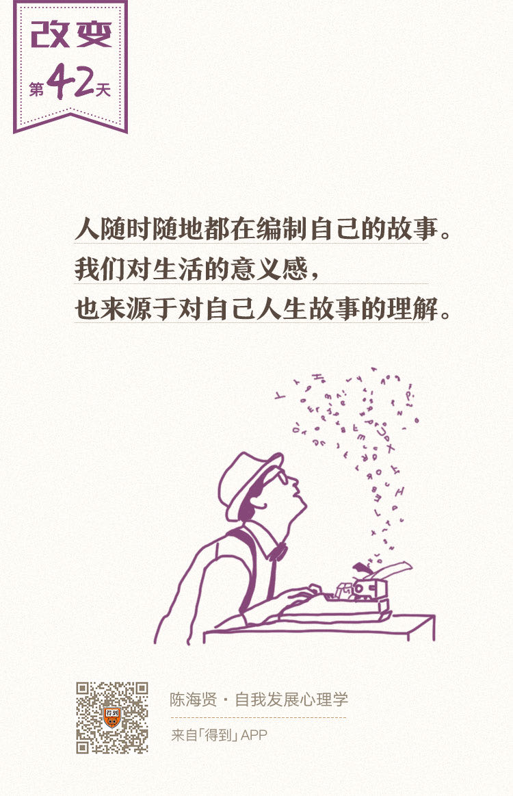

欢迎来到《自我发展心理学》。
你好，我是陈海贤。
上节课我们讲了创伤后成长。我们的经历，尤其是一些困难的经历，会永久地改变一个人。就像在暴风雨里受伤的树，身形可能会被永久地改变，也会留下很多伤疤。
但是，这些伤疤上还能慢慢长出新的枝条，我们也会从创伤中发展出新的意义。
那么，这种意义是怎么被创造出来的呢？我们是怎么组织我们的经历，把它们变成一个有机的整体的？
这就是我今天要讲的——故事。
意义感来源于人生故事
当我们想到一个人是什么样的人时，很容易想到的，就是这个人的人格是怎么样的。
什么是人格呢？
你大概认为就是这个人是内向还是外向、讨不讨人喜欢、保守还是激进之类。可是，这只是这个人很小的一面。
可是心理学家丹·麦克亚当斯（Dan McAdams）说，人格其实可以分为三个层次：
第一个层次，是基本特质，也就是我们通常理解的内向外向这个层次的人格。
事实上，我们所做的一些心理测试，包括星座的理解，都是在基本特质这个层次上的。
第二个层次，是个性化的应对方式。
比如我们的目标、防御机制、信仰，我们在人生某个阶段的生活任务和中心。这是我们为了扮演好我们现在的角色，完成我们现阶段的人生任务所发展出来的人格特质。
第三个层次，也是人格最核心的层次，是人生故事。
麦克亚当斯说，我们在不停地把过去、现在和未来重新编制成一个前后连贯、生动的个人故事。而人生故事，是我们把自己和别人区分开来最重要的特质，也是人格最重要的因素。
人随时随地都在编制自己的故事。我们对生活的意义感，也来源于我们对自己人生故事的理解。可以说，我们的整个人生，都在完成一个独特的故事。
故事开始的时候，我们并不知道这个故事是怎么样的。有时候我们经历了一些好事，我们就会很高兴：哇，原来这是一个幸福美满的故事。
有时候我们经历了一些逆境，我们就会很担心，这会不会是一个悲剧故事呢？
我们一边当观众，一边当编剧，一边经历，一边修改故事大纲。故事影响了我们的记忆，我们会把那些符合故事大纲的重要情节在记忆中保存下来，同时忘掉那些与故事无关的旁枝末节。
故事还影响了我们怎么看待现在，怎么预测将来。
我有一个来访者，她对遇到的每个喜欢她的男生都非常戒备。她觉得，这些男生都是要骗她的，就算不是骗她，等他们发现了她真实的样子，仍然会不喜欢她。
这就是她心里的故事：一个欺骗和背叛的故事。
哪怕她其实是一个漂亮的女生，受过很好的教育，在很不错的公司工作，也仍然没法改变这个故事。而在这个故事里，她不仅给自己分配了角色，也给别人分配了角色。
有时候我们心里的故事，比现实还要牢固。
“挽救式”和“污染式”的人生故事
从故事的角度，我们就能够理解，逆境或者创伤究竟是如何改变我们的。
答案是，它改变了我们的人生故事。
当这些逆境发生时，我们必须把它们整合进我们的人生故事里，重新创造一个故事。如果在经历了很大的创伤以后，我们的目标仍然是原先简单的升职加薪，那这个故事显然无法自圆其说。
麦克亚当斯说，面对挫折，我们通常会有两类故事。
一类，是“挽救式”的故事。
在这类故事里，我们通常有一个糟糕的开头，会遇到各种困境，但随着我们的不断努力和探索，会不断走出这些困境，过去的纠结可能豁然开朗，即使痛苦无法彻底消除，我们也会积极地接受，去获得内心的安宁。
如果你心里的故事是这样一种挽救式的故事，在遇到困境的时候，你自然就会预测，你会逐渐走出困境，从中学习到你需要的人生智慧。这个故事原型会启动你的行动。
另一类，是“污染式”的故事。
最开始的时候，你的生活还不错，但是现实会逐渐把原先不错的生活打破。你会遇到各种麻烦，这个困难就像污染源一样，会不断污染你原先的生活。你自己对此却无能为力，一步错步步错，最终在悔恨中怀念过去。
如果你心里的故事是这种污染式的故事，当你在顺境的时候，你就会担心好日子长不了，会有糟糕的事情来终结这一切，所以不敢好好享受。
而你遇到逆境的时候，你就会想：我命中早已注定的倒霉事果然来了。而转变所带来的焦虑和迷茫都会变成证明“我很无能”的线索。这时候，你就很容易陷入到悲观和沮丧当中。
安东尼·波登（Anthony Bourdain）是一个很著名的美食家。他曾在随笔集《半生不熟》里写过这样一段话：
显然他心里有一个典型的污染式故事。而我看到这段话，是因为在今年的6月份，他刚刚自杀了。
改变人生故事
怎么从污染式的故事变成挽救式的故事呢？
我想说的是，故事并不是外在于我们的，我们也没法根据它是否有好处来随意捏造故事。但是，我们可以重新赋予故事的意义，把它变成另一个故事。
当然前提是，这个讲故事的人本身也得相信这个故事。
我在浙大的时候，曾遇到一个来访者。
他因为看了我写的一篇关于“浙大病”的文章来的，这篇文章写的是很多考到浙大的同学，心里有一种奇怪的挫折感——他们都觉得自己本来应该去上清华北大。
他说自己就是这样，原来铁定是要上北大的，结果错过了奥数的选拔。又因为那年的高考数学题目太简单了，虽然他拿了满分，也没能拉开跟其他人的差距，只好来了浙大。
他在浑浑噩噩中度过了大一的时光，终于在大二振作起来，准备好好学习了，结果去医院检查时，发现自己得了骨癌。
对于一个年轻人来说，这是一个太重的打击，他一直感叹为什么这些不幸的事会落到自己身上。
那段时间，我只是在咨询室里陪着他，听他说他的故事。他讲的所有故事，都是功败垂成的那种污染式的故事，这给了他很多不好的暗示。
他每个月都要去做例行检查。他说只要想到又要去检查了，他整个人都会焦虑得直冒冷汗，而检查完了没事，整个人又能放松几天，直到下一次检查，周而复始。
我听他讲在癌症病房遇到的各种生死的事，讲那些在病房一起合影的病友，怎么一个个消失不见，讲病人要怎么艰难地决定是锯掉一条腿还是停止治疗，接受死亡的命运。
我自己的价值观也受了影响，觉得跟那些比起来，我所烦恼的事情，不是那么重要了。
后来，我离开了浙大，有一段时间，我们失去了联系。
在前年，我收到一封邮件。他说，他毕业了。到了一家基因公司实习。起因是，他看斯坦福大学关于机器学习的公开课，里面的老师说：如果有一天癌症被人类攻克，我相信机器学习一定扮演了最重要的角色。
他说：“这句话在我心里埋下了复仇的种子。我必须尽全力学好数据挖掘的本领，从事这方面的事业，才能希望有朝一日用所学本领对抗癌症。”
为此，他拒掉了所有大公司的offer，当公司的HR问他，你把所有的offer都拒完了，万一你后面没offer了怎么办？他回答说：很抱歉，我这一生，都不会再给自己留后路了。
对于癌症这种的重病，死亡的焦虑会一直给人无形的压力。现在，他找到了一个有形的敌人，并终于找到了自己能够对付它的方法。这帮助他从疾病的无助中摆脱出来了一些。
去年他去复查，医生说已经撑过了三年期，复发的可能性已经大幅降低了。复查的频率也从1个月一次变成了3个月一次。
前一段时间，我又见到了他。我问他怎么样，他说自己工作得挺开心，就是疾病的阴影还在。
不久前，他一个人去跑了马拉松，就是想证明，他不再是一个病人了，他甚至能比正常人做得还要多。
跑马拉松的最后一段，要经过一个隧道，隧道很黑，他两条腿都抽筋了，心里很害怕。可是他跟自己说：“我绝不能停在这里，就算爬，我也要爬过终点。”
后来他就拖着抽筋的腿，一步步终于挪到了终点。
挪过终点的那一刻，他哭得很厉害，好像那些疾病，那些痛苦的过去，那些日夜不眠的焦虑，都被抛到了终点线后面。
跑步已经不只是跑步，它变成了一种象征，象征着他和疾病的战斗。而这种象征，又编入了他的人生故事，获得了某种真实。
最重要的是，这个故事，已经不再是一个功败垂成的污染式的故事了，而变成了一个人历尽艰辛，战胜自我的挽救式的故事。
听他这么说，我很为他高兴。
今年7月份是他检查的5年期，5年是一个大限，医生说，这次检查没事，以后就不用来复查了。我也一直在心里惦记着他，并坚信他一定会平安无事。
回忆一下，这一讲我们聊了人生故事。我们讲了人生故事是人格最核心的层次，讲了挽救式故事与污染式故事的区别，也讲了我们如何在逆境中编制自己的故事，并通过人生故事来为自己寻找希望。
下节课，我们将继续跟你讲一类特定的故事——英雄故事。
我们下节课见。
